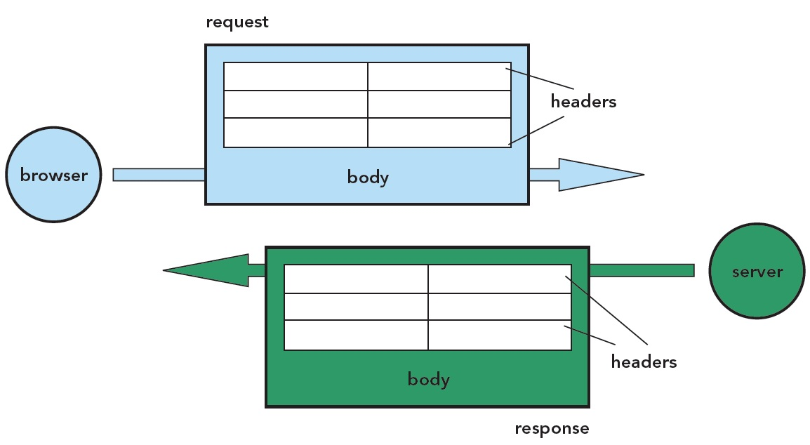
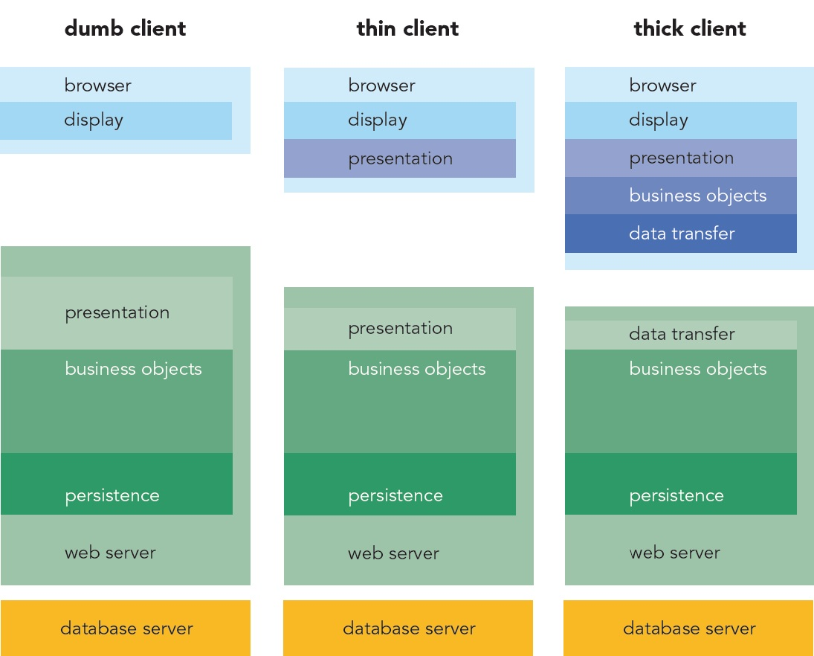

GETTING STARTED
The standard way to do Ajax is to use the XMLHttpRequest object, known as XHR by its friends. Use XHR directly, or via one of the helpful Ajax libraries such as Prototype or jQuery. How do we use XHR “by hand”? To start with, we need to get a reference to it:
if (window.XMLHttpRequest) {
xhr = new XMLHttpRequest();
} else if (window.ActiveXObject) {
xhr = new ActiveXObject(“Microsoft.XMLHTTP”);
}
|
We can then open a connection to a URL:
xhr.open(
“GET”,
“my-dynamic-content.jsp?id=”
+encodeURI(myId),
true
);
|
Specify a callback function to receive the response:
xhr.onreadystatechange = function(){
processReqChange(req);
}
|
and then send the request:
The server may be busy, or the network may be slow. We don’t want to sit around doing nothing until the response arrives, and because we’ve assigned the callback function, we don’t have to. That’s the five-minute guide for the impatient. For those who like to know the details, we’ve listed the fuller details of the XHR object below.
| Method Name |
Parameters and Descriptions |
| open(method, url, async) |
open a connection to a URL method = HTTP verb (GET, POST, etc.) url = url to open, may include querystring async = whether to make asynchronous request |
| onreadystatechange |
assign a function object as callback (similar to onclick, onload, etc. in browser event model) |
| setRequestHeader (namevalue) |
add a header to the HTTP request |
| send(body) |
send the request body = string to be used as request body |
| abort() |
stop the XHR from listening for the response |
| readyState |
stage in lifecycle of response (only populated after send() is called) |
| httpStatus |
The HTTP return code (integer, only populated after response reaches the loaded state) |
| responseText |
body of response as a JavaScript string (only set after response reaches the interactive readyState) |
| responseXML |
body of the response as a XML document object (only set after response reaches the interactive readyState) |
| getResponseHeader (name) |
read a response header by name |
| getAllResponseHeaders() |
Get an array of all response header names |
GETTING TO KNOW HTTP
To make use of the XHR to its fullest, we recommend you become familiar with the workings of the HTTP protocol. Using Ajax, you have much more control over HTTP than with classic web app development.

HTTP is a stateless request-response protocol.
- Both request and response contain headers and an optional body, which is free text.
- Only a POST request contains a body.
- A request defines a verb or method.
- The Mime type of request and response can be set by the header Content-type
Hot Tip
Not all Microsoft browsers rely on ActiveX.
IE7 provides a native JavaScript XHR, so we check for that first.
Common HTTP Verbs
99% of the time, you’ll only need GET and POST. Many other verbs are used by WebDAV, Subversion over HTTP, and other niche applications, but not all web servers will understand them.
| Verb |
Notes |
| GET |
Strictly speaking, should be used only to fetch data, not to effect changes on the server. GET requests contain no body. Parameters are passed in the querystring of the URL. |
| POST |
Should be used to update data on the server. Parameters/data passed in the body. |
| HEAD |
Will fetch the headers of the response only, not the body. Useful for finding out how large a resource is (read the Content-length header) or how old it is (read the Last-modified header), for example. |
If you’re using the increasingly popular REST approach to web services, the HTTP verb is used to indicate the type of operation being performed. The most commonly used HTTP verbs in REST map onto the CRUD (create, read, update, delete) approach:
| HTTP Verb |
CRUD operation |
Notes |
| PUT |
Create |
Add a new object instance to the domain model. |
| GET |
Read |
Get an existing domain object from the server. |
| POST |
Update |
Modify an existing domain object. |
| DELETE |
Delete |
Remove an existing object from the domain model. |
Common Mime Types
Setting the right mime type for your request and response is good manners—it’s also vital to get the app to behave correctly!
| Mime Type |
Meaning |
Usage |
| application/x-www-form-urlencoded |
Body is an encoded querystring of key-value pairs |
Sending request from HTML form or Ajax. Required in order for server to decode parameters into $_GET, servlet parameters, or HttpRequest.Form. |
| text/xml, application/xml |
Body is an XML document |
Can be used anywhere – request or response. Must set response to one of these in order to use XHR.responseXML property. |
| text/plain |
Body is plain unformatted text |
|
| text/html, text/xhtml |
Body is (X)HTML content |
Standard web pages sent from server, or content fragments sent to Ajax apps. |
| text/javascript |
Body is a piece of JavaScript code |
Standard .js files, JavaScript fragments sent to Ajax apps. |
| image/png, image/jpeg, image/gif |
Body is a binary image |
Images sent by server. |
TIPS FOR USING XHR
- Always set async to true when calling open(). Synchronous Ajax requests block the browser UI, giving the stop-start behaviour we were trying to get away from in the first place!
- XHR can be fussy about order of setting-up. Always set the callback handler before calling send()
- To send HTML-form like data
- Use encodeURI() to encode all data values
- Set the mime-type of the request to application/x-www-form-urlencoded
- Set the response mime type to application/xml or text/xml if you want to use the responseXML property
Handling the Response
We’ve assigned a callback handler function to our XHR object. This function will get called several times as the response comes in. Typically, we only want to parse the response once it has fully arrived, i.e. the readyState is complete.
xhr.onreadystatechange=function(){
if (xhr.readyState==4){
if (xhr.status==200){
parseResponse(xhr);
}else{
//handle the HTTP error...
}
};
};
|
XHR ReadyState Values
If you’re using the increasingly popular REST approach to web services, the HTTP verb is used to indicate the type of operation being performed. The most commonly used HTTP verbs in REST map onto the CRUD (create, read, update, delete) approach:
| State |
Value |
Comments |
| 0 |
Uninitialized |
The request hasn’t yet been sent |
| 1 |
Loading |
The response hasn’t yet arrived |
| 2 |
Loaded |
Response headers can be read |
| 3 |
Interactive |
Response body is incomplete, but can be read |
| 4 |
Complete |
Response body is complete |
So, what might the parseResponse() method look like? We have a lot of freedom in the types of response we send. Let’s look at some of the common ones.
Handling a HTML Response
The server can send pre-assembled HTML content, which we just stitch into the web page.
<table class=’item selected’>
<tr>
<td rowspan=’3’ valign=’top’><div class=’itemIcon’><img src=’../images/kmoon.png’></div></td>
<td class=’itemTitle’>The Moon on a Stick</td>
</tr>
<tr>
<td valign=’top’>What every project manager wants - and they want it yesterday!<br/><br/><i>NB: Stick not included.</i></td>
</tr>
<tr>
<td><div class=’price’>$365.00</div></td>
</tr>
</tr>
</table>
|
function parseResponse(xhr){
var div=document
.getElementById(“myDiv”);
div.innerHTML=xhr.responseText;
}
|
Handling a JSON Response
JSON is a simple text-markup that’s extremely easy for JavaScript to digest! It doesn’t come so naturally to server-side languages, but there are JSON libraries for most servers these days—see http://www.json.org. Most Ajax libraries now provide support for JSON.
{
imgSrc: “kmoon.png”,
title: “The Moon on a Stick”,
description: “What every project manager wants - and they want it yesterday!<br/><br/><i>NB: Stick not included.</i>”,
price: “365.00”
}
|
function parseResponse(xhr){
var jsonObj=eval(
“(“
+xhr.responseText
+”)”
);
setImgSrc(jsonObj.imgSrc);
setTitle(jsonObj.title);
}
|
Handling an XML Response
XML is a more natural fit for most server technologies. XHR supports XML by giving us the responseXML property, but parsing this using the DOM is hard work.
<item imgSrc=”kmoon.png” price=”365.00”>
<title>The Moon on a Stick</title>
<description><![CDATA[What every project manager wants - and they want it yesterday!<br/><br/><i>NB: Stick not included.</i>]]></description>
</item>
|
function parseResponse(xhr){
var xmlDoc=xhr.responseXML;
var item=xmlDoc.getElementsByTagName
(‘item’)[0];
var imgSrc=item.getAttribute
(‘imgSrc’);
var title=item.getElementsByTagName
(‘title’)[0]
.firstChild.data;
setImgSrc(imgSrc);
setTitle(title);
}
|
Some browsers also support XPath as a more pleasant way to parse XML. Sarissa and mozXPath.js both provide cross-browser XPath support.
<item imgSrc=”kmoon.png” price=”365.00”>
<title>The Moon on a Stick</title>
<description><![CDATA[What every project manager wants - and they want it yesterday!<br/><br/><i>NB: Stick not included.</i>]]></description>
</item>
|
function parseResponse(xhr){
var xmlDoc=xhr.responseXML;
var imgSrc=xmlDoc.selectSingleNode
(‘/item/@imgSrc’).value;
var title=xmlDoc.selectSingleNode
(‘/item/title/text()’).value;
setImgSrc(imgSrc);
setTitle(title);
}
|
Handling a Javascript Response
Another approach to Ajax is to generate scripts on the server, and send them to the client to be evaluated. Care should be taken here to define a suitably high-level API on the client against which the generated script is to run, otherwise tight coupling between server and client code can result.
setImgSrc(“kmoon.png”);
setTitle(
“The Moon on a Stick”
);
|
function parseResponse(xhr){
eval(xhr.responseText);
}
|
Handling Mixed Responses
Some Javascript libraries allow mixing of these dialects of Ajax within a single response. The Prototype Ajax.Updater, for example, can accept a response as HTML, into which <script> tags are embedded. The script will be extracted and evaluated, while the rest of the content is embedded into a target DOM element.
AJAX AND ARCHITECTURE
Does Ajax only affect the client-side? Certainly not! Particularly if your server is responding with data rather than HTML fragments, you’ll want to refactor to some extent.

Dumb client and thick client above are extremes. In between, there is a thinner (but still intelligent) client, that will suffice in many cases. No single model is right for all cases. Try out these rules of thumb:
- To add small Ajax features to an existing app, stick with the thin client approach. Thick client is for complex, line-of-business app replacements.
- Your client-side code is visible, and runs on somebody else’s machine. Don’t expose details of your business tier. Keep it coarse-grained.
- Some functionality MUST be kept on the server, such as data validation. Simple, fast validation on the client is an addition, not a replacement!
- Treat your client-side code well. Use the patterns and practises that you would use on the server to keep your code clean and maintainable.
- Most projects have a legacy system behind them. How can you introduce Ajax with minimal disruption? Does it speak XML, or generate HTML from components? Can you re-use that?
AJAX TOOLKITS
Client-side versus Server-side
Some toolkits are JavaScript-only, others include a back-end system too. Client-side toolkits will give more flexibility, but may require more work on the server-side too.
High-level versus Low-level
JavaScript is a flexible language, and some toolkits are geared towards enhancing the language itself in a variety of ways. Others are more concerned with higher-level issues such as simplifying XHR, or providing drop-in widgets such as trees, tables and drag-and-drop.
Some popular Ajax Toolkits
| Name |
Client/ Server |
High/ Low-level |
Comments |
| Prototype (http://prototypejs.org) |
Client |
Low |
Remodels and extends JavaScript following the Ruby scripting language. Many features for arrays, functions, XHR, DOM and forms. |
| Scriptaculous (http://script.aculo.us) |
Client |
High |
Special effects, drag and drop, and widgets built on top of prototype. |
| dojo (http://dojotoolkit.org) |
Client |
Low-high |
Comprehensive set of libraries covering everything from packaging & language features through Ajax to UI widgets. |
| Yahoo User Interface (YUI) (http://developer.yahoo.com/yui/) |
Client |
Low-high |
Another comprehensive set of libraries covering many aspects of Ajax development. |
| Ext (http://extjs.com) |
Client |
High |
Widget-based set of user interface components with Ajax support. |
| sarissa (http://sarissa.sf.net) |
Client |
Low |
Rich library for working with XML, providing cross-browser XPath and XSLT. |
| Mochikit (http://mochikit.com) |
Client |
Low-high |
General-purpose Ajax and DHTML library, inspired by Python. |
| jQuery (http://jquery.com) |
Client |
Low |
Small, concise Ajax and DOM helper library. |
| MooTools (http://mootools.net) |
Client |
Low-high |
Modular library covering everything from core classes to special effects. A promising newcomer. |
| Ruby on Rails (http://www.rubyonrails.org) |
Server |
Low-high |
Primarily a server-side toolkit, but has first-rate support for Ajax, using Prototype and Scriptaculous. Allows large parts of the client tier to be written on the server, in Ruby. |
| GWT (http://code.google.com/webtoolkit) |
Client |
High |
Java framework that allows Ajax client tier to be written in Java. |
| JSF (various vendors) |
Server |
High |
Various JSF vendors have Ajax-enabled some of their components, again allowing some Ajax functionality without hand-writing JavaScript. |
We haven’t time to show you how to make Ajax calls with all of these toolkits, but let’s pick two of the most popular: Prototype and jQuery.
The Basics : Making an Ajax request
| Prototype |
jQuery |
new Ajax.Request(
“my-dynamic-content.jsp”,
{ method: “post”,
params: { id: myId },
onComplete: function(response){
parseResponse(response);
}
}
);
|
$.post(
“my-dynamic-content.jsp”,
{ id: myId },
function(xhr){
parseResponse(xhr);
}
);
|
- No need to create your own XHR object
- Use high-level, meaningful callbacks rather than onreadystatechange
- Sensible defaults provided for all the options you don’t want to specify yourself
Loading HTML Content into a DOM Node
| Prototype |
jQuery |
new Ajax.Updater(
$(“myDomNode”),
“my-dynamic-content.jsp”,
{ method: “post”,
params: { id: myId }
}
);
|
$(“#myDomNode”).load(
“my-dynamic-content.jsp”,
{ id: myId }
);
|
- No need to provide a callback function at all
Working wth JSON Responses
| Prototype |
jQuery |
new Ajax.Request(
“my-dynamic-content.jsp”,
{ method: “post”,
params: { id: myId },
onComplete: function(response,json){
alert(json.someProperty);
}
}
);
|
$.getJSON(
“my-dynamic-content.jsp?id=”+myId,
function(json){
alert(json.someProperty);
}
);
|
- JSON response returned to our callback already parsed
GENERAL JAVASCRIPT PROGRAMMING TIPS
JavaScript is a loosely-typed scripting language with support for object-oriented and functional programming styles. Although it looks like Java and C-family languages, it’s quite different under the hood. Here are a few survival tips to get you through your first serious encounter with this language:
- Objects can be extended at runtime with new properties. Think of Javascript objects as associative arrays.
- Functions are first-class objects, and can be passed as arguments into other functions (see the numerous callback functions earlier).
- JavaScript functions support closures. That is, variables that are in scope when a function is defined can still be referenced inside the function, even if it is invoked later.
AJAX USER INTERFACES
Before Ajax, the UI was nearly always delivered as declarative HTML, and the Document Object Model, or DOM, was only used in moderation. With Ajax—especially single-page applications— the DOM can play a much bigger role.
Working with the DOM is a two-stage process:
- Finding the elements we want to work with
- Modifying their contents or reorganizing them
Finding DOM Elements
Some toolkits are JavaScript-only, others include a back-end system too. Client-side toolkits will give more flexibility, but may require more work on the server-side too.
High-level versus Low-level
The DOM standard itself gives us a few basic tools to work with. Enterprising JavaScript library developers have built on top of these to provide a much richer set of functionality.
| Function |
arguments |
returns |
notes |
document.
getElementById() |
string |
DOM Element |
find single element on page. Id attribute must be unique in page |
document.
getElementsByTagName()
element.
getElementsByTagName() |
string |
collection of DOM elements |
find all elements on page of a particular HTML tag type e.g. H1, IMG, LI. Use as a method of element to search a subtree of the document |
| element.childNodes |
none |
collection of DOM elements |
find node’s immediate children |
| element.parentNode |
none |
DOM Element |
find node’s immediate parent |
| element.nextSibling element.previousSibling |
none |
DOM Element |
allow traversal of sibling nodes |
The id attribute is often too specific—adding one to each element we may need to locate becomes tedious, and clutters the markup. Tag names, on the other hand, are not specific enough to be useful in many cases. The most common solution is to use CSS classes to locate elements. We can make these as specific or general as we need.
Finding DOM elements using Prototype
| Function |
arguments |
returns |
notes |
| $() |
string, many strings, or elements |
DOM element, or array of elements |
powerful and concise superset of getElementById() |
document.
getElementsByClassName()
element.
getElementsByClassName() |
string (a CSS class) |
array of DOM elements |
version 1.5+
simple analogue to getElementsByTagName() |
| $$() |
string (selector rule) |
array of DOM elements |
version 1.5+
accepts CSS selector rules, and xpath queries |
| element.select() |
string (selector rule) |
array of DOM elements |
version 1.6
analogue to $$(), syntactically neater |
element.up()
element.down()
element.next()
element.previous() |
selector rules, counts (both optional) |
DOM Element |
powerful positional navigation methods, that can work with selectors |
| Examples |
| $(“myList”) |
← |
selects the element with id=myList |
.select(“li.new”) |
← |
selects all DOM elements of type <LI> with CSS class new within subtree beneath myList |
| $(“widget”) |
← |
selects element with id=”widget” |
| .down(“img div.handle”,2) |
← |
internally returns list of all <IMG> tags that are children of a DIV with CSS class handle, and returns the second one |
Finding DOM elements using jQuery
| Function |
arguments |
returns |
notes |
| $() |
string (selector rule) |
jQuery object wrapping array of elements |
although only one method is listed here, jQuery is exceptionally powerful in this regard. The selector rules encompass CSS3, xpath (optional) and a range of custom selectors too! |
| Examples |
| $(“div”) |
← |
select all nodes by tag type |
$(“myList”) |
← |
select by unique id |
| $(“ul#myList li.new”) |
← |
complex CSS selector |
Hot Tip
DOM elements can be assigned to multiple CSS classes. When finding elements using a selector mechanism, you may use the same CSS classes that determine the look of your page, or you may assign separate marker classes, i.e. CSS classes that have no visual effect on the page.
Modifying the DOM
Again, the DOM standard gives us a basic set of tools to work with, and browser vendors have effectively standardized a few more.
| Function |
arguments |
returns |
notes |
document.
createElement() |
string (tag name) |
DOM Element |
create new content slowly and painfully! |
document.
createTextNode() |
string (content of node) |
DOM text node |
element.
innerHTML |
n/a |
n/a |
use the browser’s built-in HTML parser to shortcut the creation of new content |
element.
appendChild() |
DOM element |
null |
add a DOM node as child of another node |
element.
removeChild() |
DOM element |
null |
remove a child DOM node from the parent |
element.
insertBefore() |
DOM element |
null |
add a DOM node in relation to other siblings, not just at the end |
Modifying the DOM with Prototype
Prototype favors the use of innerHTML to modify the DOM. It enhances this with the Insertion namespace, and, more recently, an insert method on the DOM element class itself.
| Function |
arguments |
notes |
Insertion.Top
Insertion.Bottom
Insertion.Before
Insertion.After |
DOM element, string (HTML content) |
version 1.5: Object that inserts HTML content into element alongside existing content |
| Element.update() |
string (HTML content) |
version 1.6: overwrites content in element |
| Element.insert() |
HTML content or hash of content |
version 1.6: Can insert a single piece of content, or multiple pieces in one go |
| Element.remove() |
none |
all versions: removes the calling element (and its children) from the page |
Prototype provides no support for building DOM elements programmatically, but the Scriptaculous library adds a DOMBuilder object to the mix.
Modifying the DOM with jQuery
jQuery is based around selecting sets of DOM elements, and it provides methods for manipulating sets of DOM elements in bulk. (These can be used on sets of one element too!) The methods here all operate on a set of DOM nodes returned from a selector.
| Function |
arguments |
notes |
| $.html() |
string (HTML content) |
simple wrapper around innerHTML, will duplicate content for each element in the set |
$.append()
$.prepend()
$.before()
$.after() |
string (HTML content) |
insert content into node(s) alongside existing content |
$.appendTo()
$.prependTo()
$.insertBefore()
$.insertAfter() |
string (selector rule) or DOM element |
argument is the target element or elements, to which the current node will be moved to. If multiple targets are present, the nodes being appended will be copied to each one |
| $.remove() |
none |
remove all elements in set from the page |
| $.empty() |
none |
empty all elements in the set of their content |
| $.wrap() |
string (HTML) or DOM element |
wrap each element in set individually with a copy of the content provided in argument |
| $.wrapAll() |
string (HTML) or DOM element |
wrap all elements in the set as a single unit with the content provided in argument |
WIDGETS VS. BEHAVIORS
Both jQuery and Prototype (and its sister Scriptaculous) tend towards a style of UI called Unobtrusive Javascript, in which the content of the page is declared as HTML, and subsequently made interactive. Selectors play an important role in this approach, in locating the elements to which to add behavior. There is an alternative approach to developing Ajax UIs, much more akin to desktop application development, in which the DOM elements are created programmatically by javascript components, which the designer then wires together using layouts and containers. Qooxdoo and Ext2 are both examples of this style of UI development.
TOOLS OF THE TRADE
In an ideal world, choosing the right framework makes development a breeze, but in practice, you’ll need to go under the hood from time to time to figure out what’s going on. We recommend the following tools to keep your Ajax development on track.
| FireBug |
FF |
www.getfirebug.com |
Swiss army knife for developers, incorporating DOM & CSS inspector, interactive debugger, network monitor and profiler. |
| Web Developers Toolkit |
IE |
searchmicrosoft.com |
Closest thing to Firebug for IE, minus the debugger. |
| Script Debugger |
IE |
searchmicrosoft.com |
Free Javascript debugger for IE, (also check out Visual Studio express’ debugger). |
| Fiddler |
IE/any |
www.fiddlertool.com |
Powerful network monitor with programmable interface for modifying requests in many ways. Tight integration with IE, but can work with any browser. |
| LiveHTTP Headers |
FF |
livehttpheaders.mozdev.org |
Network monitor extension for Firefox. |
| JSUnit |
any |
www.jsunit.net |
The original unit testing framework for Javascript. |
| Selenium |
FF/any |
www.openqa.org |
Powerful unit testing tool for Javascript, featuring interactive test recorder IDE (Firefox only) and browser automation tool (most browsers). |
| YSlow |
FF |
developer.yahoo.com/yslow |
Comprehensive performance analysis for web pages, runs as a plugin to Firebug! |
| Tamper Data |
FF |
http://addons.mozilla.org/en-US/firefox/addon/966 |
modify HTTP/HTTPS headers and post parameters. |